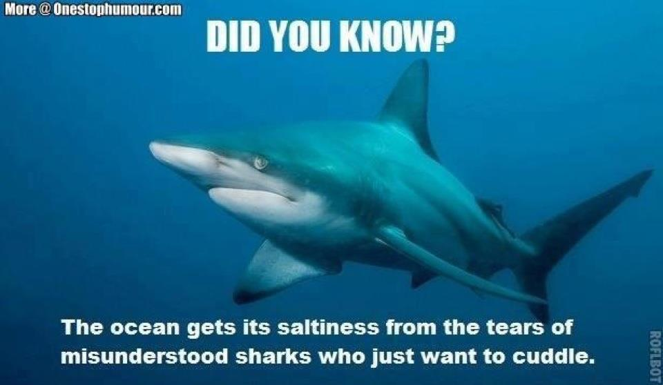

Evidence for the existence of sharks dates from the Ordovician period, 450–420 million years ago, before land vertebrates existed and before a variety of plants had colonized the continents. Only scales have been recovered from the first sharks and not all paleontologists agree that these are from true sharks, suspecting that these scales are actually those of thelodont agnathans. The oldest generally accepted shark scales are from about 420 million years ago, in the Silurian period. The first sharks looked very different from modern sharks. At this time the most common shark tooth is the cladodont, a style of thin tooth with three tines like a trident, apparently to help catch fish. The majority of modern sharks can be traced back to around 100 million years ago. Most fossils are of teeth, often in large numbers. Partial skeletons and even complete fossilized remains have been discovered. Estimates suggest that sharks grow tens of thousands of teeth over a lifetime, which explains the abundant fossils. The teeth consist of easily fossilized calcium phosphate, an apatite.
| wiki |